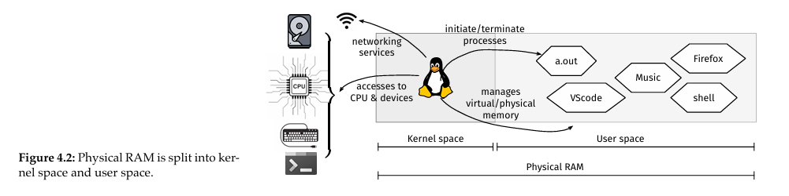

4 System Programming Concepts
Brief overview of the kernel, 4.1 (see below) shows a picture of the different parts of the system.
Chapter 5 will discuss the file subsystem and buffering mechanisms. Chapter 6 will discuss the process control subsystem, out of the 3 major tasks of it, we will only focus on inter-process communication in Chapter 7, the other 2 are not in this course.
4.1 The Kernel
All programs in our system use hardware resources (CPU, physical memory, devices, etc). Allocating and scheduling these resources is key, and is managed by the kernel. The kernel also refers to the UNIX operating system, and is essentially the OS itself.
The kernel carries out many important tasks called essential services. These are essentially features of the kernel offered to us and are listed below.
- Process scheduling and management;
- signaling and inter-process communication;
- Physical and virtual memory management;
- Provision of a file system;
- Creation and termination of processes;
- Device management;
- Networking services;
- Provision of a system call application programming interface (API).
4.2 Kernel and User Space
(See 4.2 below for visualization) When UNIX boots, the kernel is loaded into the kernel space in physical memory and stays there until the machine is shut down.
User processes (programs we write and execute) do not access kernel space, they stay in the user space
Almost all programs not the kernel are in user space. We say these programs are running in user mode.
Sometimes a program needs access to an I/O device which are managed by the kernel. Ex: printf() in C is printing a string to the monitor. Since our code can't directly access the monitor, we need to request the kernel to print the string for us.
This request will move the program into kernel space, which means it is running in kernel mode, then print the string, and finally move back into user space, which means it is again running in user mode.
4.3 System Calls
The requests mentioned in section 4.2 (above) are done through a group of functions called system calls (Syscalls).
Syscalls are special because when they are called, the kernel is running, which causes the program to change from user mode to kernel mode, which changes the execution mode of the processor.
Syscalls are invoked by the syscall() function, where the syscall's specific number and arguments are passed.
A useful trick is if a syscall's name is fun, it's number will be defined either a called __NR_fun or SYS_fun. These macros are imported by <sys/syscall.h>.
The list of all syscalls is: https://man7.org/linux/man-pages/man2/syscalls.2.html
Syscalls can also be invoked by the C wrapper functions, and this is what is commonly used.
An example is, the line printf("Hello World!\n);" actually calls the C wrapper function write(1, "Hello World!\n", 13);, which actually calls the syscall syscall(SYS_write, 1, "Hello World!\n", 13);. See 4.3 (below) for image.
4.4 A Really Brief Timeline on Linux
ngl im copy pasting this straight out of the book there is nothing to simplify
1969: Ken Thompson and Dennis Ritchie wrote the first version of UNIX at AT&T Bell Labs (iykyk);
1973: Thompson and Ritchie published the first paper on UNIX(see Resources on Canvas);
1974: UC-Berkeley (UCB) acquired the system and started adding more features. Their version of UNIX is usually called Berkeley Software Distribution (BSD); AT&T started licensing UNIX to universities as well;
1974–1979: UCB and AT&T were developing their own versions on UNIX independently;
1979: AT&T started trademarked UNIX, selling UNIX commercially, and made it expensive to own it. BSD remains free to acquire;
1985: Steve Jobs was fired from Apple, and founded a company called NeXT, Inc. To provide a system for his products, he acquired a copy of 4.3BSD UNIX;
1991: Linux was developed by Linus Torvalds. Linux itself contains only the kernel, and it behaves like UNIX. It doesn’t, however, contain any code of UNIX;
1993: AT&T divested itself of UNIX, selling it to Novell, which one year later sold the trademark to an industry consortium known as X/Open;
1996: Apple bought NeXT, and therefore acquired Steve Jobs’ operating system (based on BSD UNIX). This has become the early version of macOS.
There are a lot of different different distributions of UNIX and similar systems, so compatability became an issue. To solve this the IEEE Computer Society made a group of standards called Portable Operating System Interface (POSIX).
POSIX is a trademark of IEEE, so it is very expensive to make an OS POSIX-certified, so only a very few are. Apple's macOS and most Linux distributions are "mostly POSIX compliant".